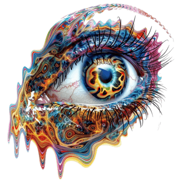

Sarau Literário
Sarau o surreal 2026.


Inscrição
Sarau Literário
Sarau o surreal 2026.
No início do século XX, na Europa, nascem as Vanguardas Europeias - movimentos artísticos que buscavam novas possibilidades de interpretar a realidade. Entre tais movimentos, surge o Surrealismo, criado por André Breton, no ano de 1924. O artista, dissidente do Dadaísmo, em seu Manifesto Surrealista propôs o “automatismo psíquico puro”, no qual o pensamento se manifesta livremente, sem as amarras da razão, da lógica ou da moral.
Inspirado pela psicanálise de Sigmund Freud - de quem Breton era grande admirador - o Surrealismo mergulha nas profundezas do inconsciente, lugar em que sonhos, fantasias e desejos ocultos se entrelaçam, criando uma realidade paralela, tão irreal quanto enigmática. Nela, o impossível ganha forma, o absurdo se torna belo e a imaginação rompe as fronteiras do mundo desperto.
Para adentrar o mundo onírico, os artistas que se apresentarão são convidados a se caracterizarem (maquiagem, roupas, fantasias, entre outros), transformando a própria aparência em parte desse universo de sonhos, mistérios e delirios como criaturas de um mundo no qual a lógica adormece e a fantasia desperta. Sejam os artistas suas próprias artes-vivas!
Então, prepare-se, sonhe, imagine, delire e venha com a Segunda Série mergulhar nesse universo de loucura e voar nesse mar de sonhos do Sarau, o Surreal.
No dia 12 de novembro de 2026.
